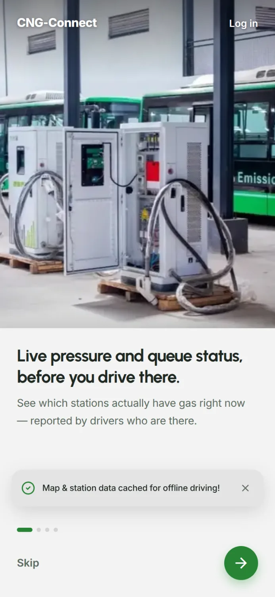

01CNG-Connect
Live
My own product
Helping drivers find gas before they join the queue
- Goal
- Give drivers switching to compressed natural gas live station status, so they stop driving to empty stations.
- Built
- Live map, status reports, savings calculator, conversion centre directory, and a driver community. React, TypeScript, and Supabase.
- Outcome
- Live and open to drivers: 90 stations across 28 states and 451 accredited workshops, backed by 39 unit tests.
- Ask for reports where the data is oldest
Crowdsourced status goes stale fast. When a driver comes within 800 m of a station with an outdated status, the app asks them to report. Fresh reports arrive exactly where the map is least reliable.
- Rate-limit sign-in codes
Every SMS code costs money, and a script could drain the balance in minutes. A 60-second cooldown per number fixes that. Sign-in stays cheap to run and resistant to abuse.
- Test the parts that must not break
39 unit tests cover OTP services, the proximity alert engine, permissions, and phone validation. Changes ship with confidence under strict TypeScript checks.
Mobility / CommunityFounder, designer, developer

